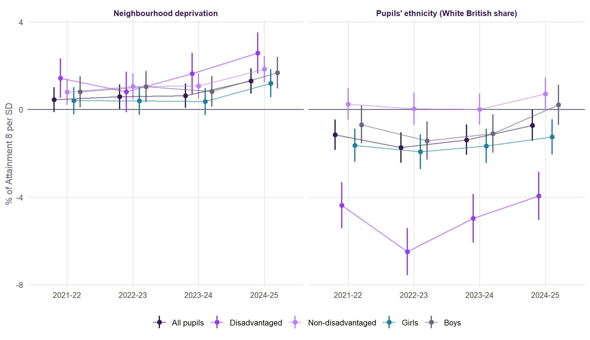
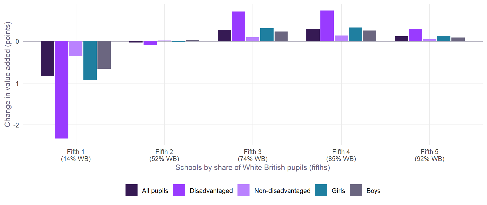

| Group | Candidate | Ethnicity | Deprivation | AIC change | Out-of-sample error |
|---|---|---|---|---|---|
| All pupils | + pupils' ethnicity | -1.7% | -87 | -0.26% | |
| + neighbourhood deprivation | +1.0% | -45 | -0.38% | ||
| + both | -1.5% | +0.6% | -102 | -0.46% | |
| Disadvantaged | + pupils' ethnicity | -5.7% | -388 | -1.13% | |
| + neighbourhood deprivation | +2.7% | -119 | -0.74% | ||
| + both | -5.2% | +1.3% | -414 | -1.39% | |
| Non-disadvantaged | + pupils' ethnicity | -0.4% | -2 | -0.01% | |
| + neighbourhood deprivation | +1.1% | -48 | -0.41% | ||
| + both | +0.0% | +1.1% | -46 | -0.41% | |
| Girls | + pupils' ethnicity | -2.0% | -98 | -0.30% | |
| + neighbourhood deprivation | +0.9% | -30 | -0.30% | ||
| + both | -1.8% | +0.5% | -103 | -0.41% | |
| Boys | + pupils' ethnicity | -1.4% | -36 | -0.12% | |
| + neighbourhood deprivation | +1.2% | -43 | -0.37% | ||
| + both | -1.0% | +1.0% | -59 | -0.37% |
Value Added v2.2 candidates
Pupils’ ethnicity and neighbourhood deprivation, tested for every group of pupils and every year: what they add, what they change, and the case for and against.
NoteCandidates, not changes
Value Added v2.1 is what this site publishes. This page tests two candidate terms for a v2.2, the way the v2.1 candidates were tested: on identical school-years, for every group, with each year held out in turn. Where the terms came from is set out in the neighbourhood covariates experiment.
ImportantIn short
- Neighbourhood deprivation helps every group, in every year. It improves predictions out of sample for all five groups and takes about 7 to 9% off the local authority variance (22% for disadvantaged pupils). It changes little else. Recommended for v2.2.
- Pupils’ ethnicity matters almost only for disadvantaged pupils. There it is a large gain (AIC -388). For non-disadvantaged pupils it is zero. A third of schools would change fifth on disadvantaged value added, with London losing most. Whether to adjust for it is a question of what value added is for. Recommended beside v2.2, not in it, as v2.1 publishes the kind of absence.
The candidates
| Term | What it is | Source | One standard deviation |
|---|---|---|---|
| Pupils’ ethnicity | The school’s share of White British pupils, each January | School census, 2022 to 2025 | 29 percentage points |
| Neighbourhood deprivation | Share of households deprived in two or more of four dimensions (employment, education, health, housing), over the 150 Output Areas nearest the school | Census 2021, TS011 | 5.2 percentage points |
v2.1 has neither. It has English as an additional language for pupils. For the neighbourhood it has adult qualifications only. Ethnicity is matched to 99.9% of school-years, by year.
Fit and prediction
Both terms improve fit and prediction for every group, with one exception: ethnicity does nothing for non-disadvantaged pupils (-0.4%, AIC -2). For disadvantaged pupils, a school with one standard deviation more White British pupils gets 5.7% lower Attainment 8 for its disadvantaged pupils, all else in v2.1 equal. That matches what is well known at pupil level: disadvantaged White British pupils do less well at GCSE than disadvantaged pupils of most other ethnic groups. Neighbourhood deprivation goes the other way, about +1% per standard deviation for most groups. At the same share of graduates, a school among more deprived households does a little better than v2.1 expects.
Year by year

Both are steady. Ethnicity is between −4% and −6.5% for disadvantaged pupils every year and near zero for non-disadvantaged pupils every year. Deprivation is positive in every year for every group, largest in 2024/25.
What would move
| Group | Candidate | Schools: r | Change fifth | Average change | Authorities: r | Authority variance | Brighton and Hove |
|---|---|---|---|---|---|---|---|
| All pupils | + pupils' ethnicity | 0.989 | 17% | 0.33 | 0.983 | -1% | +4.1% (5th) |
| + neighbourhood deprivation | 0.994 | 12% | 0.24 | 0.987 | -7% | +3.1% (11th) | |
| + both | 0.985 | 19% | 0.39 | 0.974 | -5% | +3.6% (6th) | |
| Disadvantaged | + pupils' ethnicity | 0.937 | 33% | 0.94 | 0.915 | -17% | +4.5% (11th) |
| + neighbourhood deprivation | 0.981 | 19% | 0.52 | 0.964 | -22% | +2.0% (33rd) | |
| + both | 0.926 | 35% | 1.01 | 0.892 | -24% | +3.5% (16th) | |
| Non-disadvantaged | + pupils' ethnicity | 0.999 | 3% | 0.08 | 0.999 | +0% | +3.8% (3rd) |
| + neighbourhood deprivation | 0.994 | 13% | 0.27 | 0.985 | -9% | +3.0% (9th) | |
| + both | 0.994 | 12% | 0.27 | 0.985 | -9% | +3.0% (9th) | |
| Girls | + pupils' ethnicity | 0.986 | 19% | 0.39 | 0.978 | -2% | +3.2% (9th) |
| + neighbourhood deprivation | 0.995 | 10% | 0.23 | 0.990 | -7% | +2.3% (19th) | |
| + both | 0.983 | 20% | 0.42 | 0.972 | -5% | +2.9% (14th) | |
| Boys | + pupils' ethnicity | 0.994 | 11% | 0.25 | 0.991 | -1% | +4.8% (4th) |
| + neighbourhood deprivation | 0.994 | 11% | 0.27 | 0.986 | -8% | +3.8% (6th) | |
| + both | 0.990 | 14% | 0.34 | 0.979 | -6% | +4.1% (6th) |
Neighbourhood deprivation is a light touch. Schools’ value added correlates at 0.994 with v2.1 for all pupils, and the average school moves by 0.24 points. Brighton and Hove goes from +3.8% to +3.1% for all pupils.
Ethnicity is not a light touch for disadvantaged pupils. 33% of schools change fifth, and the average school’s disadvantaged value added moves by 0.9 points.
Who would gain and who would lose

With both terms, disadvantaged value added falls by 2.3 points on average in the fifth of schools with the fewest White British pupils (about 13%), and rises by up to 0.7 in the middle and upper fifths. By region, London’s schools lose 2.0 points of disadvantaged value added on average; every other region gains a little, except the West Midlands (-0.4).
The case for and against ethnicity
For. Value added is meant to compare schools fairly, on what they do rather than whom they teach. Disadvantaged White British pupils do less well wherever they are taught. A school that serves many of them is judged against schools whose disadvantaged pupils were always more likely to do well. Adjusting for it is what DfE’s contextual value added did until 2011. It is also what the evidence here supports, for this group, in every year.
Against. An expectation that varies by ethnicity builds a lower expectation into the measure for some pupils. That was the main criticism of contextual value added and part of why it was dropped. It would also take out of view a real gap that policy should see: the low attainment of disadvantaged White British pupils. And the term is a school share, not each pupil’s own ethnicity, so it adjusts schools, not pupils.
What we would do. Publish it beside v2.2 rather than in it, as v2.1 publishes value added allowing for the kind of absence. The headline measure stays free of ethnicity. Anyone asking “how does this school do with its particular disadvantaged pupils?” can see the answer next to it.
What we would recommend for v2.2
Tip
This approach is agreed and on the roadmap for a future release. Until then, everything on this site is Value Added v2.1.
- Add neighbourhood deprivation to the expectation, beside neighbourhood education. It is a neighbourhood measure, like the term it sits next to. It helps every group in every year. It is not specific to graduate-rich places (Two kinds of deprived neighbourhood), and it survives with parents’ qualifications measured properly.
- Publish value added allowing for pupils’ ethnicity beside the headline, for every group, labelled, with this page as its explanation.
- Keep testing: whether the ethnicity effect is a White British effect or varies by group (Gypsy, Roma and Traveller, Black Caribbean and others), using the census’s detailed shares.
Built by R/14_v22_candidates.R.